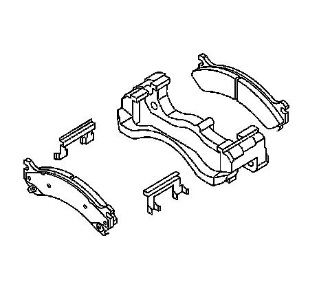

Front Disc Brake Mounting and Hardware Inspection
Front Disc Brake Mounting and Hardware Inspection
Caution: Refer to Brake Dust Caution.
1. Inspect the fluid level in the brake master cylinder reservoir.
2. If the brake fluid level is midway between the maximum-full point and the minimum allowable level then no brake fluid needs to be removed from the reservoir before proceeding.
3. If the brake fluid level is higher than midway between the maximum-full point and the minimum allowable level then remove brake fluid to the midway point before proceeding.
4. Raise and support the vehicle. Refer Lifting and Jacking the Vehicle.
5. Remove the tire and wheel assembly.

6. Grasp the brake caliper housing and try to move the brake caliper housing up/down and forward/reverse in relation to the brake caliper mounting bracket. If excessive looseness is observed the brake caliper bracket bushings and/or the brake caliper mounting bolts may need to be replaced.
7. Compress the front caliper pistons.
^ Install a large C-clamp over the top of the caliper housing and against the back of the outboard pad.
^ Slowly tighten the C-clamp until the pistons are pushed completely into the caliper bores.
^ Remove the C-clamp from the caliper.
8. With the pistons compressed into the caliper bores, grasp the brake caliper housing and slide it back and forth on the brake caliper mounting bolts. Check for smooth operation. If the brake caliper housing slide force is high or the brake caliper housing does not slide smoothly, inspect the brake caliper mounting bolts and/or the brake caliper mounting bracket bushings for wear or damage. If wear or damage conditions are found, replacement of the brake caliper mounting bolts and/or the brake caliper mounting bracket bushings is necessary.
9. Remove the brake caliper mounting bolts from the brake caliper mounting bracket and support the brake caliper using heavy mechanics wire. Do Not remove the hydraulic brake hose from the caliper.
10. Remove the disc brake pads from the brake caliper mounting bracket.
11. Inspect the disc brake pad mounting hardware for the following:
^ Missing mounting hardware
^ Excessive corrosion
^ Bent mounting tabs
^ Looseness at the brake caliper mounting bracket
^ Looseness at the disc brake pads
^ Excessive contaminants in the brake caliper mounting bracket surface and threads.
12. If any of the conditions listed are found, the disc brake pad mounting hardware requires replacement.
13. Ensure the disc brake pads are held firmly in place on the brake caliper mounting bracket, yet slide easily on the mounting hardware without binding.
14. Inspect the caliper bolts (1) for the following:
^ Binding
^ Seizing
^ Looseness in the brake caliper mounting bracket (3)
^ Bent or damaged brake caliper mounting bolts
^ Cracked or torn boots (4)
^ Missing boots
^ Bent or damaged brake caliper mounting bracket (3)
15. If any of the conditions listed are found then the brake caliper mounting hardware requires replacement.
16. Install the disc brake pads to the brake caliper mounting bracket.
17. Install the disc brake caliper to the brake caliper mounting bracket. Refer to Front Brake Caliper Replacement.